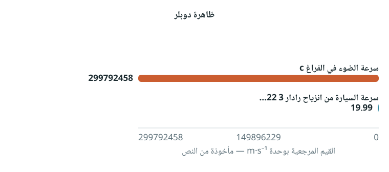

ظاهرة دوبلر
Doppler effect
ظاهرة دوبلر هي تغيّر التردد الملاحَظ للموجة حين تتحرك المصدر أو المراقب أو كلاهما: يقترب التردد عند التقارب ويبتعد عند التباعد. تُستعمل في رادار السرعة وفي قياس سرعة النجوم وفي الموجات فوق الصوتية الطبية.
حين يتحرك مصدر موجات نحو المراقب، تنضغط قمم الموجات أمامه فتقلّ المسافة بينها ويرتفع التردد الملاحَظ؛ وحين يبتعد تتمدد فتقلّ. وللصوت في وسط مادي: f′ = f·(v ± v_o)/(v ∓ v_s)، حيث v سرعة الصوت وv_o سرعة المراقب وv_s سرعة المصدر، والإشارات تُختار بحسب اتجاه الحركة. مثال: سيارة تصدر بوقاً بتردد 500 Hz وتسير بسرعة 30.0 m/s نحو مراقب ساكن في هواء سرعة صوته 343 m/s: f′ = 500 × 343/(343 − 30.0) = 547.9 Hz، أي ارتفاع بنحو 48 Hz.
كيف تعمل الظاهرة؟
الموجة سلسلة قمم متتالية تفصلها مسافة تساوي الطول الموجي. فإذا تحرك المصدر نحو المراقب بين إصدار قمتين، تكون القمة الثانية قد أُصدرت من موضع أقرب، فتقلّ المسافة بينهما أمام المصدر. ولأن سرعة الموجة في الوسط ثابتة، فإن تقليل الطول الموجي يرفع التردد: v = f·λ. والعكس عند الابتعاد. أما حركة المراقب فتؤثر بطريقة مختلفة: المراقب المقترب يقطع قمماً أكثر في الثانية فيرتفع التردد الملاحَظ دون أن يتغير الطول الموجي في الوسط.
العلاقة بالأرقام
للصوت: f′ = f·(v ± v_o)/(v ∓ v_s)، والإشارة العليا للمراقب المقترب والسفلى للمصدر المقترب. مثال: f = 500 Hz، v = 343 m/s، v_s = 30.0 m/s مقترباً → f′ = 500 × 343/313 = 547.9 Hz، والانزياح 47.9 Hz أي 9.6%. وللضوء: z = Δλ/λ = v/c للسرعات الصغيرة. مثال: مجرة تبتعد بـ3 000 km/s تعطي z = 3.0×10⁶/2.998×10⁸ = 0.0100، أي انزياح 1% نحو الأحمر.
مفاهيم متقاربة
يُفرَّق بين دوبلر الصوتي ودوبلر الضوئي في المرجع: الصوت يحتاج وسطاً فتُقاس السرعات بالنسبة إليه، والضوء لا وسط له فتُقاس نسبياً. ويُفرَّق بين الانزياح الأحمر الدوبلري والانزياح الأحمر الكوني: الأول حركة في فضاء، والثاني تمدد الفضاء نفسه. ويُفرَّق بين دوبلر والاتساع الحراري للخط: الأول إزاحة، والثاني توزيع عشوائي. وأخيراً يُفرَّق بين دوبلر أحادي الاتجاه ودوبلر ثنائي الاتجاه في الرادار، حيث يُضاعف الانزياح لأن الإشارة تعود.
حدود التطبيق
الصيغة الكلاسيكية للصوت تفشل عند سرعات تقارب سرعة الصوت، حيث تتجمع الموجات في مقدمة حادة وتنشأ موجة صدمية. والصيغة النسبية للضوء تفشل إن طُبّقت على سرعات عشوائية كبيرة دون معالجة نسبية كاملة. ولا تصف الظاهرة مصادر متعددة في وقت واحد، حيث تختلط الانزياحات ويحتاج تحليل طيفي. كذلك لا تُستعمل لقياس سرعة الأجسام البعيدة جداً دون تصحيح تمدد الكون، ولا في الأوساط التي تتغير فيها سرعة الموجة على المسار.

| الكمية | القيمة | المصدر |
|---|---|---|
| سرعة الضوء في الفراغ c | 299 792 458 m·s⁻¹ | [1] |
| التردد الملاحَظ لبوق 500 Hz مقترب بـ30 m/s | 547.9 Hz | [2] |
| سرعة السيارة من انزياح رادار 3 220 Hz | 19.99 m·s⁻¹ | [1] |
المصادر
- 1 CODATA Value: speed of light in vacuum — NIST — CODATA 2022 recommended values (2024). physics.nist.gov/cgi-bin/cuu/Value?c · اطُّلع عليه 2026-11-21
- 2 CODATA Value: Planck constant — NIST — CODATA 2022 recommended values (2024). physics.nist.gov/cgi-bin/cuu/Value?h · اطُّلع عليه 2026-11-21
- 3 CODATA Value: molar gas constant — NIST — CODATA 2022 recommended values (2024). physics.nist.gov/cgi-bin/cuu/Value?r · اطُّلع عليه 2026-11-21
استشهد بهذا المصطلح
الصيغتان مبنيتان من بيانات الصفحة نفسها: العنوان والتاريخ ورابط النسخة المنشورة.
ظاهرة دوبلر — Doppler effect. (2026). ديوان المعرفة — انفراد. https://infiradev.com/diwan/terms/term-doppler-effect.html
@misc{term-doppler-effect2026,
title = {ظاهرة دوبلر},
titleaddon = {Doppler effect},
howpublished = {{ديوان المعرفة — انفراد} — مرجع علمي عربي},
year = {2026},
url = {https://infiradev.com/diwan/terms/term-doppler-effect.html},
urldate = {2026-11-26},
note = {مراجعة علمية: hermes (مراجعة معتمدة 2026-11-26)}
}
راجعه: hermes (مراجعة معتمدة 2026-11-26) · 2026-11-26 · آخر تحديث 2026-11-21